准备阶段
完成了 keil5 工具的安装
stm32 的基本信息
由意法半导体公司开发的 32 位单片机，作为中控
| ST | M32 | F103 | C8T6 |
| 品牌 | 产品信息 | 产品系列 | 规格型号 |
| 意法半导体 | 32位单片机 | 主流型 M3内核 72MHz | 48 引脚 64kFlash LQFP封装 -40~85℃ |
G系列 通用； F系列 主流； H系列 高性能； L系列 低功耗； W系列 无线
C8T6:
- 引脚数量 48 ©，
- Flash 容量 8Kbit ，
- 封装类型 T = LQFP ，
- 温度范围 6 = -40~85℃
- T = 36; C = 48; R = 64; V = 100; Z = 144;
- H = BGA; I = UFBGA; T = LQFP; U = VFQFPN (封装类型表示焊盘形状)
- 6 = -40~85 ℃
- 7 = -40~105 ℃
stm32 引脚分布
根据 LQFP48 找到引脚分布图
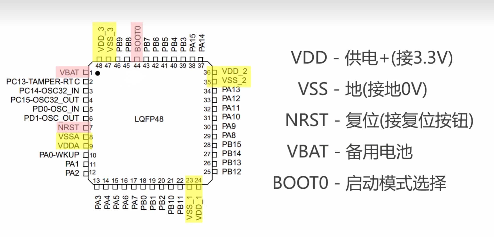
引脚排列规则：左上角为 1 号，逆时针排序
特殊引脚
- VDD : 供电+ (3.3V)
- VSS : 接地 0V
- NRST : 复位 接复位按钮
- VBAT : 备用电池
- BOOT0 : 启动模式选择
为何不用 VSS
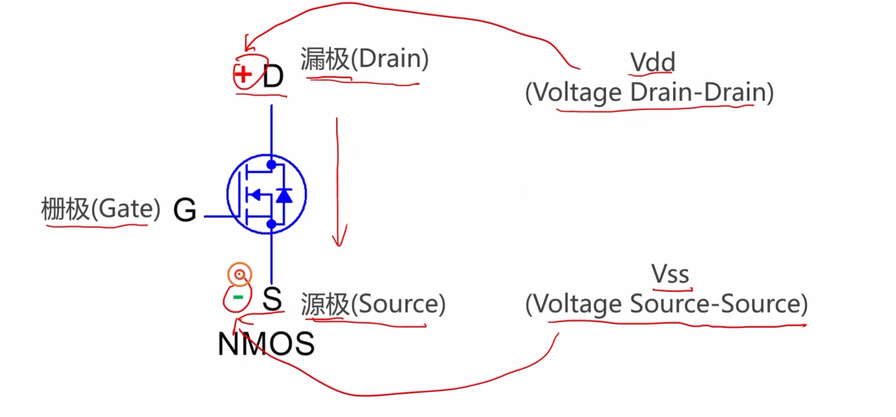
普通引脚的命名规则
- 以字母作为组编号
- 以数字作为引脚编号
例如：
- GPIOA : PA0 PA1 PA2 … PA15 (16个)
- GPIOB : PB0 PB1 PB2 … PB15 (16个)
- GPIOC : PC13 PC14 PC15
- GPIOD : PD0 PD1
| 注意：引脚编号连续，在实际位置上不一定连续
GPIO
GPIO 是什么？
GPIO 属于一种片上外设。片上外设类似于人体的器官，可以独立完成一些任务。
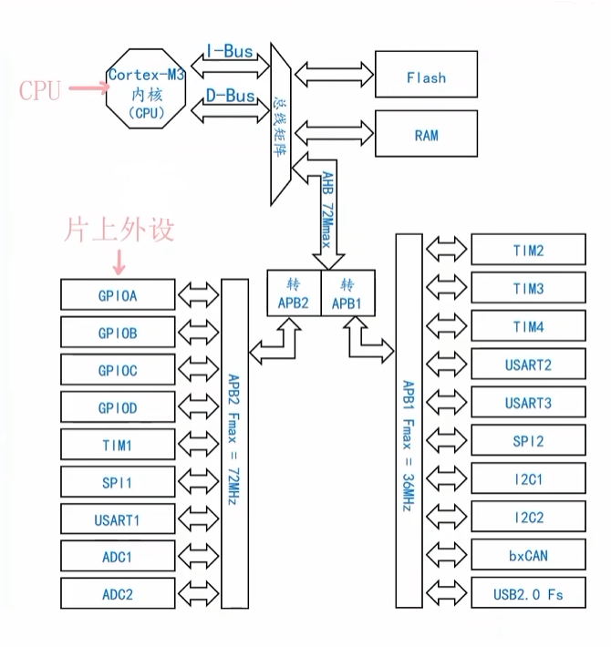
有什么功能？
可以控制 IO 引脚，见 1.3.3 举例，GPIO 可以控制其对应的一组引脚
的八种工作模式
| 输出 | 输入 |
|---|---|
| 通用输出推挽 | 输入上拉 |
| 通用输出开漏 | 输入下拉 |
| 复用输出推挽 | 输入浮空 |
| 复用输出开漏 | 模拟模式 |
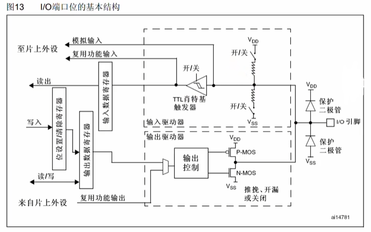
输出
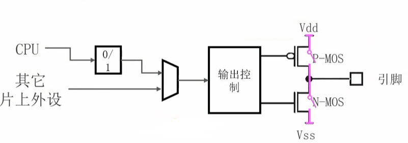
推挽
- 推(Push): 寄存器为 0 接入 Vss 向外推电流
- 挽(Pull): 寄存器为 1 接入 Vdd 从外向里拉电流
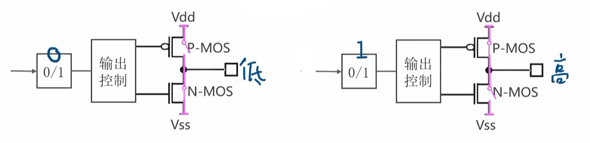
开漏
开漏模式下，P-MOS 始终保持断开，寄存器为 0 时接入 Vss 输出低电压，寄存器位 1 时引脚悬空，进入高阻抗状态
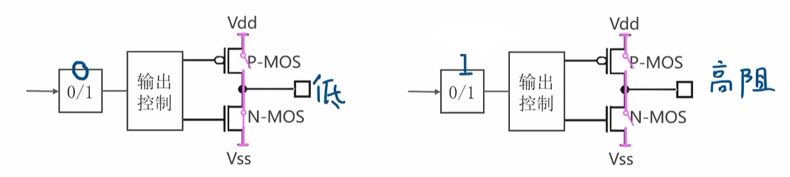
通用和复用
通用模式下，直接通过编程 CPU 控制 IO 引脚输出高/低电压；复用模式下，通过其它的片上外设来控制引脚
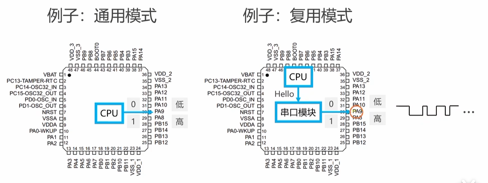
IO 的最大输出速度
IO 最大输出速度，指的是向 IO 交替写 0 和 1 且不失真的最快速度。
在非理想情况下，电压上升和下降都需要一定时间，那么可以分为三个阶段：上升时间、下降时间、保持时间。这个时间就限制了 IO 的最大输出速度，当保持时间为 0 时，就达到了最大输出速度。
由此，调整上升时间和下降时间就可以调整最大输出速度。
我们使用的芯片提供了三种最大输出速度，低速 2MHz ，中速 10MHz ，高速 50MHz。
在编程时，应该选择满足要求的最低最大输出速度，电压变化过于陡峭时会增加耗电，并且引入 EMI 问题（电磁干扰）。
| 冷知识 人眼的临界闪光频率是 45.8Hz 所以我们完全感受不到 50Hz 的交流灯光
LED 闪灯实验
二极管的导通压降为 0.7V ，通过限流电阻，使得 Vdd 输出 3.3V 的时候，电流为 5mA 左右，使得 LEd 点亮。
推挽模式下控制 LED ，如下图：
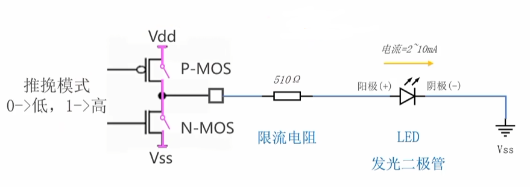
开漏模式下控制 LED ，如下图：
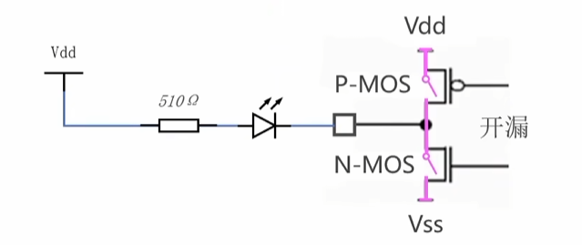
观看最小系统板电路图，发现使用的是开漏接法，连接的是 PC13 引脚。
时钟
时钟可以类比为人的心跳，在使用片上外设之前应该要开启对应的时钟
1 | // 开启 GPIOx 的时钟 |
GPIO 模块的编程接口
| 编程接口 | 作用 | 备注 |
|---|---|---|
| GPOI_Init | 初始化 IO 引脚 | 初始化一根 IO 引脚，即使用 IO 引脚之前配置一些参数（输入输出模式，最大输出速度） |
| GPIO_WriteBit | 向输出数据寄存器写一个比特位 | \ |
| GPIO_ReadInputDataBit | 从输入数据寄存器读一个比特位 | \ |
| GPIO_ReadOutputDataBit | 从输出数据寄存器读一个比特位 | 最近一次写入是什么，读出来的就是什么 |
GPIO_Init
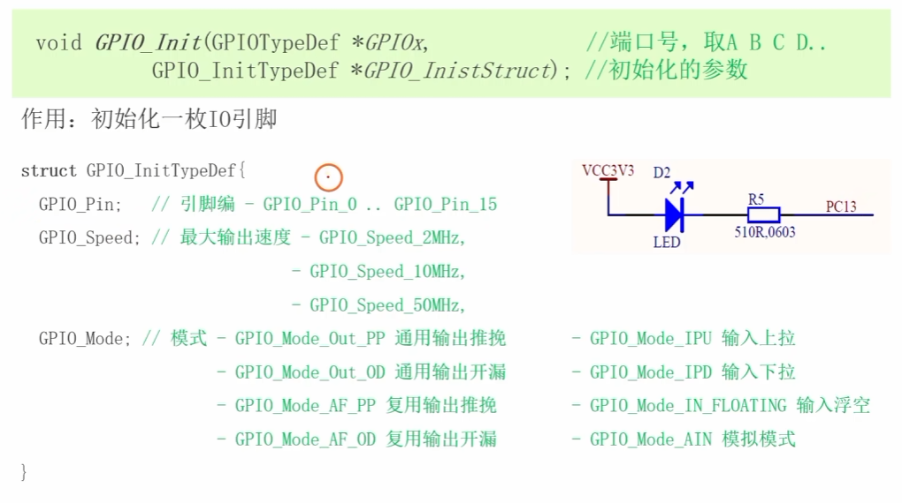
GPIO_WriteBit
1 | void GPIO_WriteBit(GPIOTypeDef *GPI0x, //端口号,取A B C D.. |
完整代码
1 |
|
输入
输入部分主要研究结构图的上半部分，即输入电路部分。
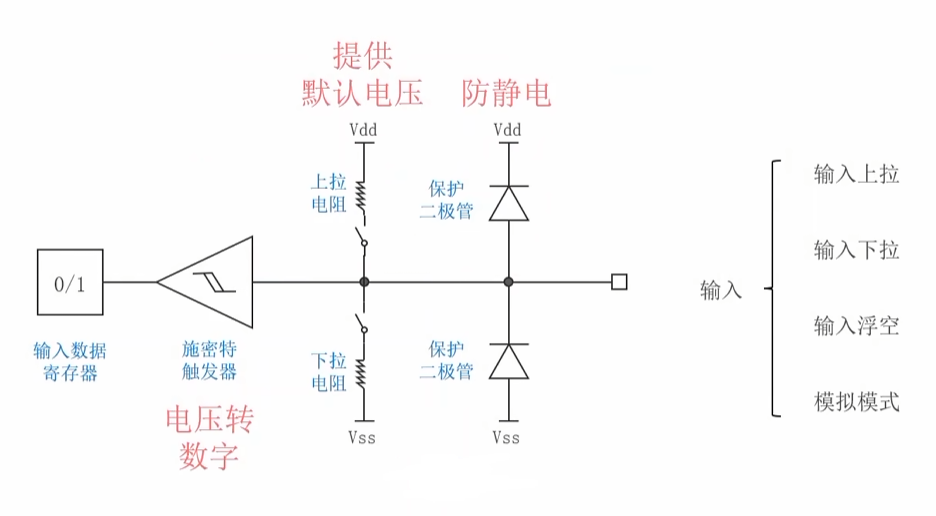
保护二极管的工作原理
静电电压较高，电流会随着保护二极管流出。
上拉电阻和下拉电阻
上拉电阻和下拉电阻可以保持电路的稳定。施密特触发器流入的电流始终为 0 ，不存在压降。
当上拉电阻接入时，IO 接口悬空时，Vdd 的电压会使得施密特触发器两边形成电势差，从而向输入数据寄存器写入 1 。
所以说，上拉电阻连通可以提供默认高电压，下拉电阻连通可以提供默认低电压，两个只需要连通一个就可以了。
按钮试验
GPIO Mode
| 模式 | 名称 | 备注 |
|---|---|---|
| GPIO_Mode_AIN | 模拟输入 | Analog Input ADC 采样等模拟信号输入 |
| GPIO_Mode_IN_FLOATING | 浮空输入 | 输入电平不确定，需外部电路决定 |
| GPIO_Mode_IPD | 输入下拉 | Input Pull-up 内部下拉电阻，默认低电平 |
| GPIO_Mode_IPU | 输入上拉 | Input Pull-up 内部上拉电阻，默认高电平 |
| GPIO_Mode_Out_OD | 通用开漏输出 | OD = Open Drain，需外部上拉电阻 |
| GPIO_Mode_Out_PP | 通用推挽输出 | PP = Push Pull，可输出强高低电平 |
| GPIO_Mode_AF_OD | 复用开漏输出 | AF = Alternate Function 外设功能（如 I²C、USART 等）的开漏输出 |
| GPIO_Mode_AF_PP | 复用推挽输出 | 外设功能（如 SPI、USART 等）的推挽输出 |
LED 接线
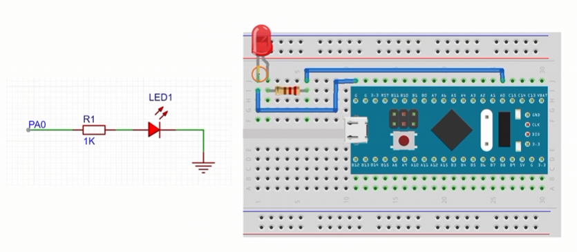
根据电路图安装好电路。
通过检查 LED 点亮判断电路是否连接成功。
1 |
|
LED 点亮成功！
按钮接线
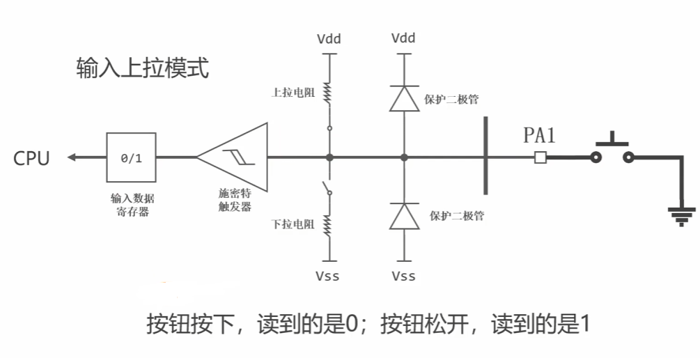
输入上拉模式时，当按钮按下时电路连通接地，没有电势差，写入 0 ；当按钮松开时，Vdd 通过连通的上拉电阻提供高位电压，写入 1 。
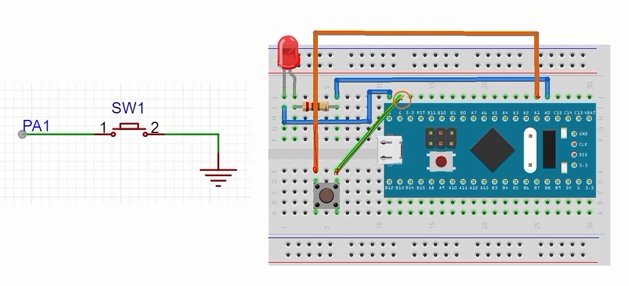
按图安装好按钮。要特别注意，按钮是具有方向的，不要左右装反了。
1 | uint8_t GPIo_ReadInputDataBit(GPIOTypeDef *GPIOx,//端口号 |
1 |
|
效果：按钮按下时， LED 点亮。按钮松开时， LED 熄灭。
| 本人因为把接地接到 R 去了所以一开始半天没效果，要记得接地是 G(Ground) 啊 TwT
串口
通信协议
串口是什么
串口是一种通信接口，可以用于传递数据。
串口由两个引脚组成， Tx(Transmit) 和 Rx(Receive) 。交叉连接两个串口，就可以实现数据的双向传输。
串口的数据格式
Tx 在空闲时是高电压，以低电压作为起始位。在数据位 (8~9位，最后一位可作为校验位) 结束后，以高电压作为停止位，同时回到空闲位。
例如，通过串口发送十进制的数字 27:
1 | 空闲|起|11011000|停|空闲 |
在发送字符串时，使用 ASCII 码。
例如，发送字符串 “Hello”:
1 | 空闲| |
校验位的使用方式
校验分为奇校验和偶校验。即判断 1 的个数位奇数还是偶数。
USART 模块的使用方法
USART 简介
我们学习的单片机有三个 USART ，可以把 USART 模块看作人的耳朵和嘴巴的集合。
USART 基本用法
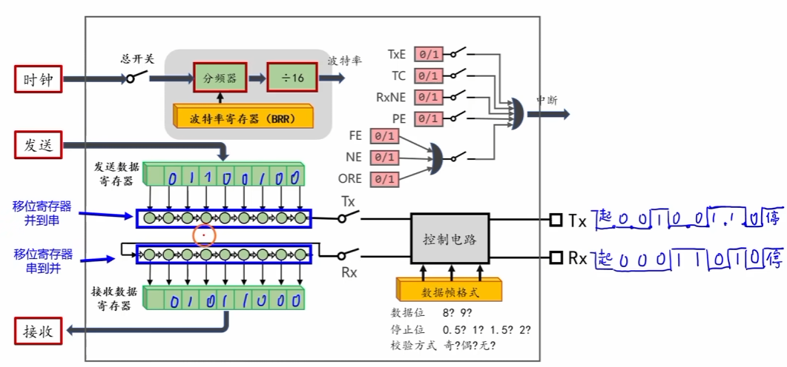
通过读取接收数据寄存器接收数据，通过发送数据寄存器发送数据。
移位寄存器和串并转换
在发送数据时，需要将并行的数据转换位串行，接收数据时则相反。
移位寄存器会按照周期将数据右移，移出去的数据就会发送为电压。可以按照队列来理解。于是就完成了并到串的转换。
同理，如果数据从左边进入，就完成从串到并的转换。
数据帧格式的设置方法
| 设置内容 | 值 |
|---|---|
| 数据位 | 8/9 |
| 停止位 | 0.5/1/1.5/2 |
| 校验方式 | 奇/偶/无 |
波特率的设置方法
波特率：每秒钟最多传输多少位。常用的波特率有 9600, 115200, 921600。
通过写入波特率寄存器来设置分频器，再叠加一个固定 1/16 的分频器，时钟频率经过两个分频器就会得到波特率。
例如，希望使用 115200 的波特率，且时钟频率为 72MHz ，分频器就要设置为 39.0625。按照浮点数的寄存方式寄存在寄存器中。
编程接口
1 | void USART_Init(USART_TypeDef *USARTx, // 串口名称 |